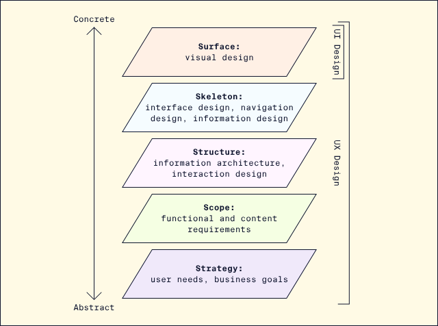
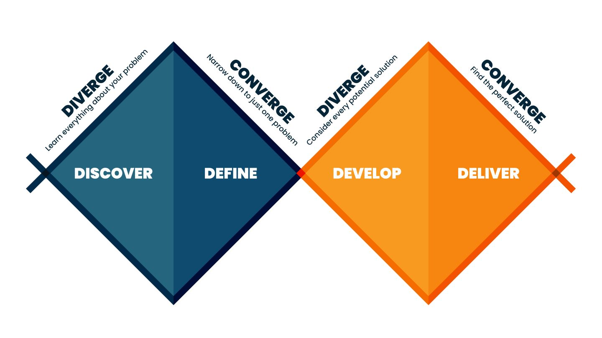

Parv : UI stands for User Interface and UX stands for User Experience.
A user interface is the interface through which a user interacts with the
device for example:
Command Line Interface [cli]
Graphical User Interface [GUI]
Menu driven Interface [mdi]
Form Based Interface [fbi]
Natural Language Interface [nli]
For devices with screens, the user interface is what is displayed on the device’s screen [GUI].
Apple Lisa (1983), the first GUI-based personal computer available to the public.
User interface (UI) design is a design discipline focused on the visual elements of the interface, for example:
Layout: Where do elements appear on the screen?
Colors: What palette is used and what emotions do those colors evoke?
Typography: What typefaces are used and what do they communicate?
Interaction design: How do elements respond to user interaction?
Brand identity: How do all of the visual elements come together to represent the brand’s vision?
Responsiveness and usability: Is the interface easy to use across different devices?
Accessibility and inclusivity: Does the interface work for everyone?
Front-end development: What is the code and technical backbone powering the interface?
Jack : What is User Experience (UX) Design?

Parv : User experience (UX) describes the entire experience around a product or service,
taking into account the user’s emotional state,
the context or environment, and the designed system or artifact.
Today, the User Experience is at the centre and put first and
the systems are more designed for pleasure rather then just
system reliability, system speed, using it without special training and the usability and measurable out put
becuase those things will automatically be there as per the market need.
User experience (UX) design is a human-centered design discipline that addresses the holistic experience of a product, focused on:
User journey: The entire process surrounding use of a product, from the problem to be solved through the impact of the solution.
User research: Qualitative and quantitative research to put the user at the center of the design process.
Deliverables to document the user experience and define the workflows and features of a product or design, such as:
Personas: Summaries of example and target users, generally based on a composite of user research.
Journey maps: A timeline of user actions related to accomplishing a particular goal related to a product or design.
Storyboards: A sequence of panels (often resembling a comic book) depicting a user story chronologically.
Prototypes: Iterative models, sketches or wireframes of a design used to gather feedback and inform the final design.
UX design encompasses the entire process, while UI design primarily focuses on the surface.
Jack : Five Elements of UX Design?
PARV: 5 Elements of UX design are Strategy, Scope, Structure, Skelton, and Surface.
Strategy: What problem is this product intended to solve? Decision making under user needs and business goal.
Scope: Generating, priortizing, negotiating and specifying the requirements. Deciding what product, feature, Functionality and content will meet the specification.
Structure: Structure of the information and content. What and how to display on the screen. Structure is split into two parts, Interaction Design & Information Architecture.
Interaction Design (IxD)- 5 Principles of good IxD
Consistency
Visibility
Learnability
Predictability
Feedback // what next
Information Architechure or Structure patterns
Hierarchical
Hub and Spoke
Organic
Sequential
Tabbed
Facets
Skeleton:
Skeleton has three components
Interface Design
Navigation Design
Information Design
Surface: How does a product look and feel? The Vsual design, layout, color, brand identity, accessibility etcetra are the core of Surface.
Design Thinking
Design thinking intend to solve Wicked
problems—complex, multi-dimensional
problems. Design thinking puts people at the center of every stage of the process and encourages designers to fully empathize with the user. Five steps to the design process
are :
Empathise - Understand the user and the landscape
Define - Define the problem and align with business goals and user needs.
Ideate - Generate a range of ideas for possible solutions, emphasizing creativity.
Prototype - Explore potential solutions by creating prototypes of the product to gather feedback.
Test -Test the best solutions developed during prototyping.
User - Centred Design - Users should be involved from the beginning of the process.
User-centered design incorporates and acts upon feedback from users both during the development process and after launch.
Defining "Good UX"
Characteristics of a good user experience are -
Useful: fulfills a user’s needs
Usable: easy to use and understand
Desirable: visually attractive and succinct
Findable: easy to navigate and find information
Accessible: users with disabilities can use the product
Credible: the product, company, and services are trustworthy
Valuable: delivers business value
Equitable: benefiting individuals across skills and backgrounds
Enjoyable: pleasing to use beyond basic functionality
Jack : what are the UI and UX Methodologies?
Parv: Design thinking puts people at the center of every process and encourages designers to set aside assumptions. For example, instead of designing a new children’s toothbrush, a design thinking approach would define “how to clean teeth” as the problem and explore a wide range of solutions.
Like the double diamond model, design thinking offers opportunities to focus on both divergent and convergent thinking across its steps to encourage both creativity and problem solving. Design thinking lives at the intersection of desirability (people), viability (business), and feasibility (technology).
1. Double Diamond model of design
Based on Diverge or Analysis and Converge or Synthesis
It can affect change at a systemic level.
puts people at the center of every process.
Design thinking lives at the intersection of
desirability (people), viability (business), and feasibility (technology).
DISCOVER - Learn everyting about the problem
DEFINE - Narrow down to just one problem
DEVELOP - Consider every potential solution
DELIVER - Find the perfect solution


The Product Development Life Cycle
The Product Development Life Cycle consists of 5 stages:
Brainstorm: Starting from the pain point - the team researches and brainstorms all possible solutions.
Define: The team aligns on specifications for the product by defining the vision, goals, target users, features, benefits, and success metrics.
Design: The product is designed from low-fidelity to high-fidelity, starting with sketches and wireframes and moving to prototypes and a completed interface.
Test: The product or prototype is tested to ensure it works as intended.
Launch: The final design is released to the public, but the cycle doesn’t end here. Typically, testing continues even after the product has launched, and the cycle continues.